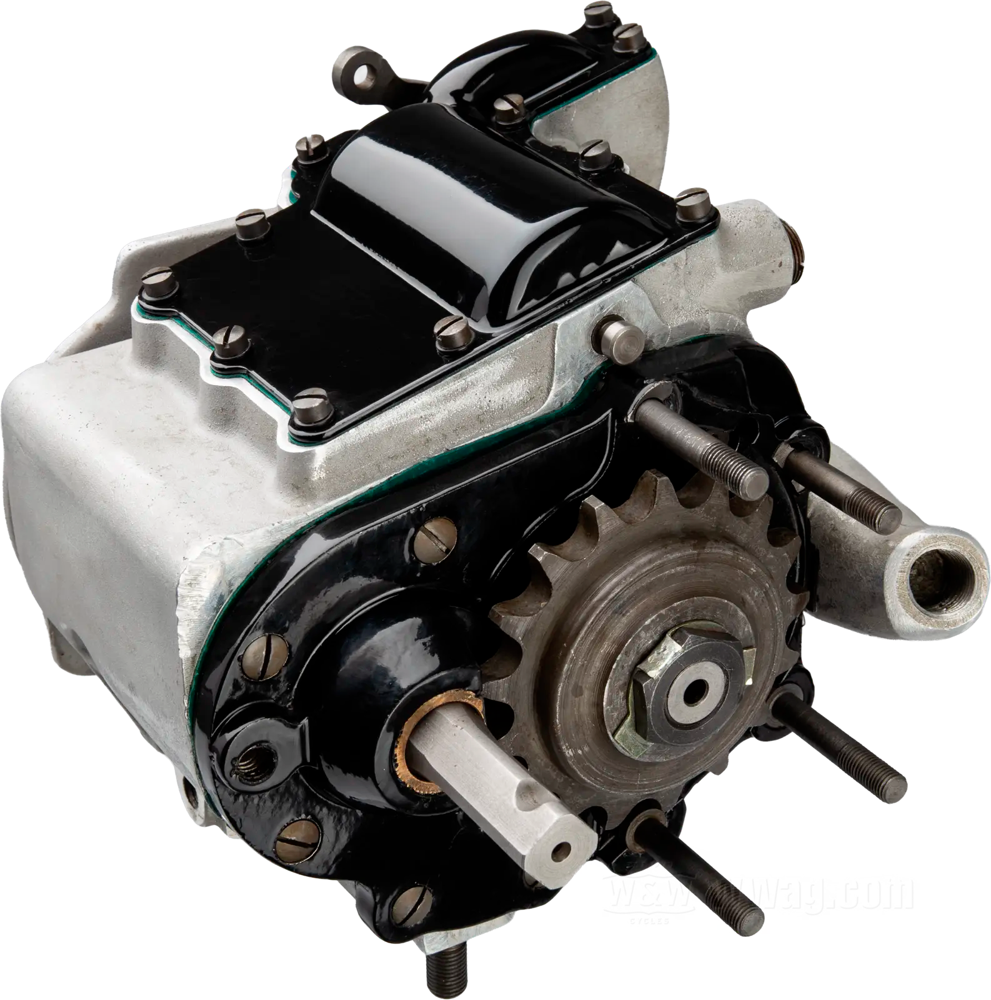
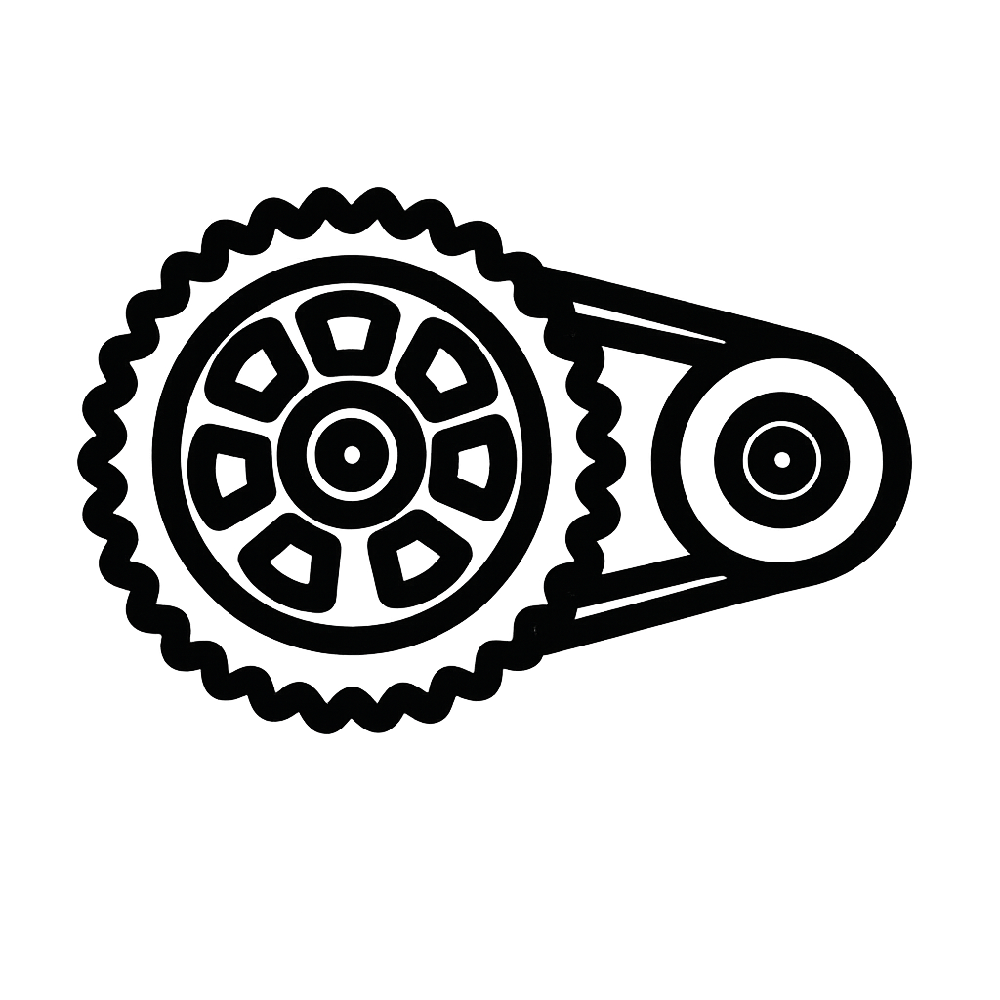

Caja de cambios
Permite ajustar la potencia del motor según la velocidad. Una buena caja de cambios hace que la conducción sea más eficiente, cómoda y controlada. Es esencial para adaptarse a diferentes situaciones en la vía..

aqui una lista de modelos que puden ser de utilidad
- Automatic
- 4-speed
- 6-speed
- 5-speed
- 3-speed
- 1-speed
Embrague
Permite conectar y desconectar el motor de la transmisión para cambiar de marcha. Su calidad influye en la suavidad al manejar y en la comodidad general..
aqui una lista de modelos que puden ser de utilidad
- Automatic centrifugal clutch; dry type
- CVT
- Dual clutch. Wet, multi-plate with coil springs, aluminum cam assist and slipper.
- Wet, multi-plate with coil springs, aluminum cam assist and slipper clutch
- Dry multi-plate shoe
- Wet multiplate
- Wet, multiplate with coil springs
- Wet multi-plate
- Wet multiplate with coil springs
- Wet multiplate, ssist/slipper
- Wet multiplate, assist/slipper clutch
- Wet, multiplate hydraulic clutch
- Assist and Slipper Clutch
- Wet multiplate, assisted slipper clutch
- Wet, multiple discs. Mechanical, cable-actuated.
- Centrifugal dry clutch
- Multiplate wet clutch
- Assist and slipper clutch
- Multiplate assist-and-slipper wet clutch
- Wet,multiple disc
- Wet, multiple-disc
- Dry, centrifugal
- Multiplate wet
- Wet, Multiple Disc
- Multiplate, assist and slipper clutch
- Multiplate assist and slipper clutch
- Centrifugal clutch
- Automatic CVT
- Wet multi-disc manual clutch
- Automatic centrifugal and wet, multi-disc clutch
- Multiplate, wet manual clutch
- Wet multi-disc, manual
- wet multi-disc manual clutch
- Wet multi-disc manual
- Wet multi-disc, hydraulic
- Wet multi-disc manual clutch and hydraulic clutch actuation
- Wet multidisc
- Multi plate wet
- Wet, multi-disc
- Automatic. Wet Shoe.
- Wet multi-plate
- Dry shoe, automatic, centrifugal type
- Automatic, centrifugal
- Wet, multiplate. Magnesium-alloy.
- Multi-plate, wet type, manual release. Magnesium-alloy.
- Automatic
- Wet multiplate, rack-and-pinion activated.
- Wet, multi-plate type. Suzuki Clutch Assist.
- Wet, multi-plate
- Centrifugal dry clutch
- Multiple-disc clutch in oil bath, mechanically operated
- Multiple-disc wet clutch (anti hopping), mechanically operated
- Multiplate clutch in oil bath
- Multi-disc oil bath (anti-hopping) with self-reinforcement
- Multiple-disc clutch in oil bath
- Multi-plate wet clutch, hydraulically operated
- Multiplate clutch in oil bath, slipper clutch
- Wet clutch with an anti-hopping function, hydraulic activation
- Oil lubricated clutch, hydraulically operated
- Single-disc dry
- Single dry plate clutch, hydraulically operated
- Hydraulically operated single-disc dry clutch
- Slipper and self-servo wet multiplate clutch with hydraulic control
- Wet, multiplate, slipper
- Slipper and self-servo wet multiplate clutch, hydraulic control
- Multiplate wet hydraulic control, self-servo action on drive, slipper action on over-run
- Hydraullically controlled slipper and self-servo wet multilplate
- Light action, wet, multiplate clutch with hydraulic control. Self-servo action on drive, slipper action on over-run
- Hydraulically controlled slipper and self-servo wet multiplate
- Hydraulically controlled slipper and self-servo wet multiplate clutch
- Dry multiplate with hydraulic control
- Hydraulically controlled slipper dry clutch. Self bleeding master cylinder.
- Wet, multiplate
- Slipper and self-servo wet multiplate clutch mechanically operated
- Multi-plate clutch, Brembo hydraulics
- PASC anti-hopping clutch/ hydraulically operated
- Wet multi-plate clutch, Brembo hydraulics
- Wet, DDS multi-disc clutch, Brembo hydraulics
- Wet multi-disc clutch, Brembo hydraulics
- Wet multi-disc
- Wet multi-disc clutch, hydraulically actuated
- Wet, multi-plate assist clutch
- Wet, multi-plate assist
- Wet, multi-plate torque assist
- Wet, multi-plate torque assist clutch
- Slip-Assist Clutch
- Wet, multi-plate hydraulically operated, torque assist
- Wet, multi-plate assist
- Wet, multi-plate assist
- Wet. multi-plate, slip
- Wet. multi-plate assist clutch
- Wet. multi-plate, slip assisted
- Wet. multi-plate assist
- Gates Carbon belt drive
- Hydraulically operated multi-plate wet clutch.
- Multiple discs, in oil bath
- Multi-plate in oil bath.
- Multi-plate wet clutch with mechanical slip system
- Multiplate wet clutch with mechanical slipper system.
- Multiplate, wet
- Automatic centrifugal dry
- Automatic centrifugal dry clutch
- Automatic dry centifuge with damper buffers
- Multiplate wet clutch, hydraulically operated
- Multi plate wet clutch with slipper system
- Multi-plate with diaphragm spring in oil bath
- Wet, Multi-Plate, Assist
- Wet, Multi-Plate, Assist. Gear Drive Wet Clutch.
- Wet Multiplate
- Gear Drive Wet Clutch
- Wet, multi-plate
- Assist and Slip, Multi-Plate
- Assist and slip, Multi-Plate
- Gear Drive Wet Clutch. Wet, Multi-Plate, Assist.
- Wet, Multi-Plate. Gear Drive Wet Clutch.
- Wet, Multi-Plate
- Wet
- Wet multiplate. Gear Drive Wet Clutch.
- Wet, multi-disc with back torque limiting device and Brembo radial pump/lever assembly
- Multi-disk wet clutch with hydraulic actuation and back torque limiting device
- Multi-disk wet clutch with hydraulic actuation
- S.C.S. 2.0 (Smart Clutch System) Radius CX automatic clutch with hydraulic clutch actuation, wet multi-disc
- Multi-disc wet clutch with hydraulic actuation and back torque limiting device.
- Multi-disc wet clutch with hydraulic actuation and back torque limiting device
- Wet, multi-disc slipper clutch
- Wet multidisc hydraulic clutch
- Wet, multi-disc with back torque limiting
- Hydraulic, wet, multi-disc with slipper clutch
- Multidisc Wet
- Wet
- Multidisc wet
- Wet multi-plate
- Wet sump
- Wet clutch
- Wet multi-disc DS clutch, Brembo hydraulics
- DDS wet multi-disc clutch, Braktec hydraulics
- Wet, DDS multi-disc clutch, Magura hydraulics
- Suter slipper clutch, Brembo Hydraulics
- Wet, multi-disc clutch, Magura hydraulics
- Centrifugal clutch (adjustable)
- Wet, multi-disc clutch, Formula hydraulics
- DS wet multi-disc clutch, Braktec hydraulics
- Slipper clutch, hydraulically actuated
- Dry single plate with flexible couplings
- Dry single disc
- 170 mm diameter single disc with integrated flexible couplings
- Single-disc with integrated anti-vibration buffer
- Wet, Multiplate, Assist and Slipper
- Wet, Multiplate with Assist and Slipper Clutch
- Slipper clutch
- Wet Multi-Plate
- Wet multi plate RT slipper clutch
- Wet multi plate- slipper clutch with 5 plate
- CVT automatic
- Wet - multi plate type
- Multiplate, wet
- Wet, Multiple - Disc
- Centrifugal Wet Type
- Pivoted clutch centrifugally operated
- Wet Multi Plate - 6 Plate Design
- Clutchless direct drive
- Wet multiplate coil spring
- Baker 6 speed
- Baker 6 Speed, optional HD 5-speed
Transmisión
Es el sistema que lleva la potencia del motor a la rueda trasera. Puede ser por cadena, correa o cardán. Cada uno tiene ventajas: la cadena es común y económica, la correa es más silenciosa y el cardán requiere menos mantenimiento.

aqui una lista de modelos que puden ser de utilidad
- Belt (final drive)
- Chain (final drive)
- Shaft drive (cardan) (final drive)